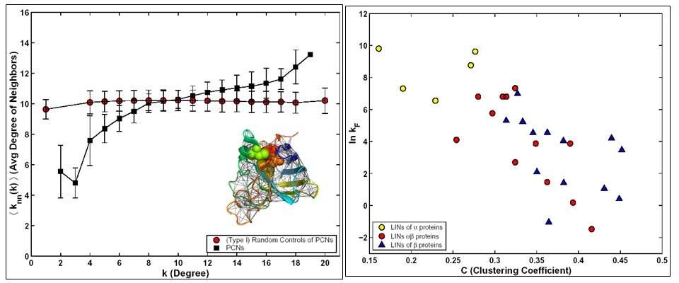
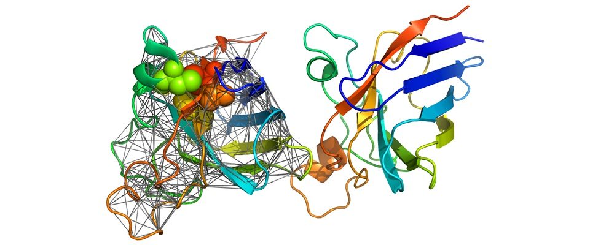

<!-- Page Content -->
<div class="container card" style="margin-top: 1em; min-height: 24em;">
  <div class="card-body">
    <h4 class="card-title">Structural Bioinformatics</h4>

    <section id="content">
     <b>Residue Interaction Graph Models of Proteins Structures</b> <br>
  Proteins are important biomolecules as they are the facilitators of cellular functions. They can be modeled as complex adaptive systems, whose structure-function relationship and the process of folding pose fundamental problems of immense application value.
  Protein structures can be studied as complex networks of interacting amino acids. We have studied proteins of different structural classes from the network perspective. The results of this study indicate that proteins, regardless of their structural class, show small-world network property. We discovered that contrary to most other complex networks protein contact networks are of assortative nature. Moreover we were able to associate the observed assortative nature to kinetics of folding. <br><br>

   <br><br> 

  
  <b>Enzyme Engineering</b> <br>
  Our recent collaborative research involved graph theoretical studies of a plant Cu,Zn SOD structure and engineering a thermostable enzyme by mutagenesis that were predicted by computational modeling. This study suggests the importance of increased monomer to dimer ratio to enhance thermostability of Cu,Zn SOD, wherein mutation of a free cysteine (Cys-95) played a central role. The results were supported by <i>in silico</i> as well as other biochemical assays. The engineered SOD can be used for developing transgenic plants tolerant to abiotic stresses, particularly for high temperature and drought stress, where the temperature can rise to as high as 50–60°C.<br><br>
  
   <br> 

  <i><b>References:</b></i> 
  <ul>
  <li>Ganesh Bagler and Somdatta Sinha, "Assortative mixing in protein Contact Networks and protein folding kinetics", Bioinformatics, 23, 14, 1760-1767 (2007). </li>
  <li>Ganesh Bagler* and Somdatta Sinha, "Network properties of protein Structures", Physica A, 346, 27-33 (2005).</li>
  <li> Arun Kumar, Som Dutt, Ganesh Bagler, Paramvir Singh Ahuja, Sanjay Kumar, "Engineering a thermo-stable superoxide dismutase functional at sub-zero to >50 degree celcius, which also tolerates autoclaving", Scientific Reports (Nature Publishing Group), 2, 387, 1-8 (2012).</li>
  <li>Michael Lappe, Ganesh Bagler, Ioannis Fillipis, Henning Stehr, Jose M Duarte, and Sathyapriya Rajagopal, "Designing evolvable libraries using multi-body potentials", Current Opinion in Biotechnology, (COVER-PAGE ARTICLE), 20, 437-446 (2009). </li>
  <li>Ganesh Bagler*, "Complex Network Models of Protein Structures -- Structural correlates of biophysical properties", Lambert Academic Publishing (Germany), ISBN: 978-3-8433-5860-6 (2010; BOOK).</li>


  </ul>


    </section>

  </div>
</div>
<!-- /.container -->